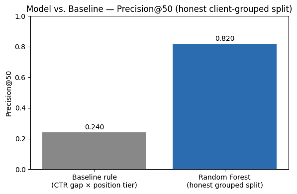
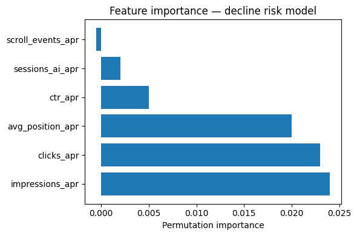

A content reviewer can typically check a fixed number of pages per cycle — far fewer than the number of pages that show any sign of decline. A hand-written rule (score pages by search visibility, freshness, and position) already exists in this line of work, but treats every signal with the same fixed weight regardless of how they actually interact. This work asks: given a page's search signals over a recent month, which pages should a reviewer look at first? The decision improved is refresh-review prioritization; the actor is a content strategist with limited capacity; the cost of a wrong call is two-sided — wasting a review slot on a stable page, or missing a real decline until the next cycle.
This work uses the FlyRank ML Internship warehouse release (Hugging Face: FlyRank/internship-warehouse), specifically the fact_content_daily_performance table, filtered to two mid-panel months: April 2026 (feature window) and May 2026 (outcome window used to define the label). The grain is one row per content page, per client, per day, aggregated to a monthly level per page. The sealed final month (June 2026, the _sample table) was deliberately excluded from all development, per the internship's data-use guidance, since it represents the natural outcome window of any past→future label and would otherwise leak the answer. No client names, URLs, domains, or raw exports appear anywhere in this work.
Label: a page is marked is_declining = 1 if its May 2026 impressions fell more than 20% below its April 2026 impressions. This is a proxy for genuine decline, not a verified causal outcome.
Features (all from April, strictly before the label's outcome window): impressions, clicks, average search position, CTR, AI-referral sessions, scroll events.
Baseline: a hand-written rule scoring pages by the gap between their actual CTR and the average CTR for pages at the same position tier, multiplied by impressions (so large, high-traffic gaps rank above small, low-traffic ones).
Model: Random Forest, chosen because earlier signal auditing (staleness vs. CTR) showed a non-monotonic, MIXED relationship — suggesting decline risk depends on signal combinations, not a single linear rule.
Validation: grouped split by client_hash_id — no client's pages appear in both train and test. A naive random row-level split was also tested for comparison and produced an inflated 0.900 Precision@50, versus 0.820 under the honest grouped split — evidence that a naive split lets the model partly memorize client-specific quirks rather than learn generalizable signal.
Leakage check: all six features come only from the April window, strictly before the May label window. No FlyRank product-decision fields (health/priority scores) were used as inputs.
| Method | Precision@50 |
|---|---|
| Hand-written baseline rule | 0.240 |
| Random Forest (honest client-grouped split) | 0.820 |

Feature importance (permutation-based) shows impressions and clicks as the strongest observed drivers, followed by average position and CTR. AI-referral sessions contributed almost nothing, consistent with its very low (~4%) data availability across this warehouse slice.

Error analysis: of the model's top 50 ranked pages, 45 were true positives (genuinely declining) and 5 were false positives. The false positives tended to be very small pages (median ~13 monthly impressions, near-zero CTR) at weaker average positions — plausibly already-marginal pages with little room to decline further, rather than pages with a genuine emerging decline pattern.
is_declining is a proxy label (a >20% impression drop), not a verified causal or product outcome.The model's output feeds a three-tier action queue: review_for_refresh (score ≥ 0.6), monitor (0.4–0.6), no_action (below 0.4), each carrying a reason code (HIGH_VISIBILITY_LOW_CTR, POOR_POSITION_HIGH_IMPRESSIONS, or GENERAL_DECLINE_RISK) so a reviewer understands why a page was flagged, not just that it was.
Monitoring / retrain triggers: Precision@50 drops meaningfully below 0.820 on a fresh month pair; GA4 availability shifts significantly from ~4%; the production client mix diverges substantially from the 41 clients used in training; more than ~3 months pass without revalidation.
All notebooks, the data contract, signal audits, baseline, model, validation audit, and action playbook are available in the accompanying repository: